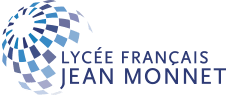
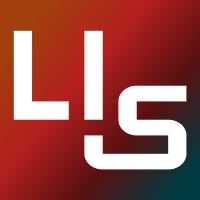
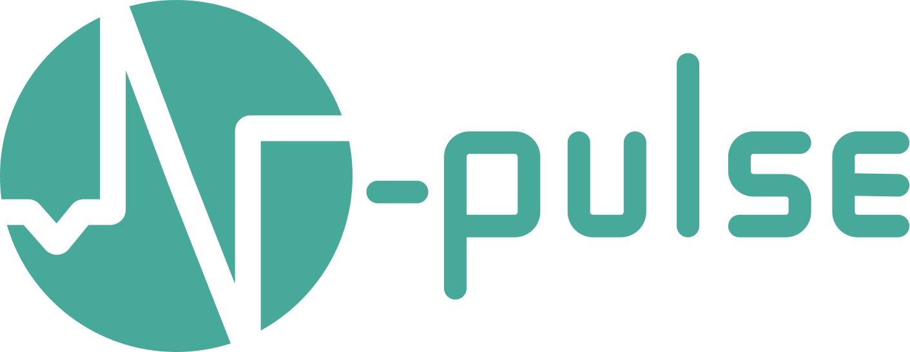
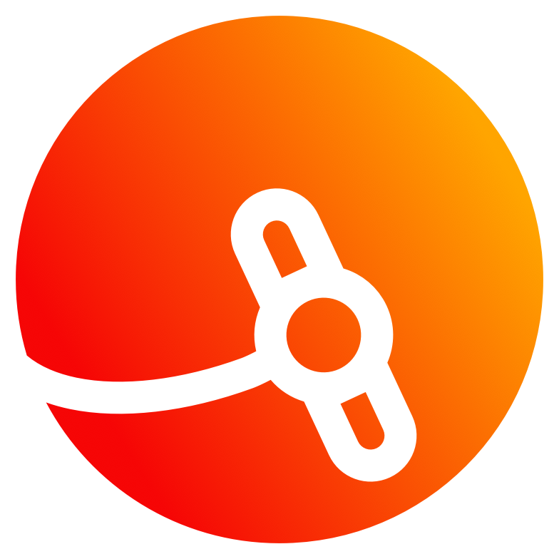
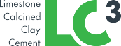
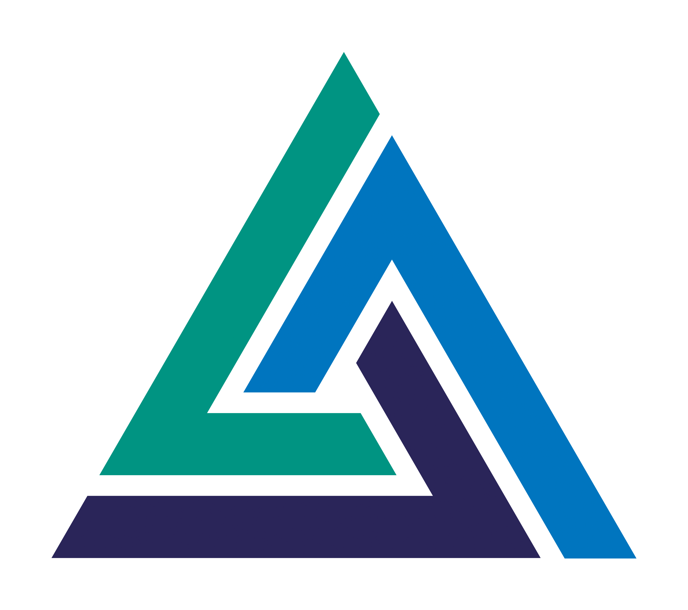

EPFL — BSc Computer Science
Darius Giannoli
Student Researcher @ LIS and NTU.
Computer Science student at EPFL. I research wearable robotics, haptic feedback systems, and human-robot interaction at the Laboratory of Intelligent Systems. I will soon work on Humanoid Robotics at NTU Singapore as part of the Global Connect Fellowship.
Education

Lycée Jean-Monnet, Brussels — French Science Baccalaureate
Research

Haptic Feedback for Drone Swarm Embodiment
Laboratory of Intelligent Systems, EPFL — Prof. Dario Floreano
Developing wearable haptic devices combining vibration and compression for drone swarm control. Conducting behavioral studies on multi-channel tactile encoding.
Humanoid Robotics
Humanoid Robotics Lab, NTU — Prof. Xie Ming
Selected as a student researcher for the competitive NTU Global Connect Fellowship program for a 2 months research in the Humanoid Robotics Lab.
Experience

Team Lead, Software & Haptics
EPFL N-Pulse Make Project
Leading development of vision-based grasping pipelines for prosthetics. Managing 12 master students (being in 2nd year of bachelor) across software, firmware, and ML teams.

Telecommunications Engineer
EPFL Spacecraft Team
Developed HMAC algorithms for secure telemetry. Built UHF antenna and transceiver test systems.

Data Intern
LC3 Project, EPFL Laboratory of Construction Materials
Buit and maintained a database to track material availability for the laboratory.
Honors

Laidlaw Leadership and Research Scholar
Awarded "Highly Recommended" by Taylor & Francis Group—one of 20 students recognized among over 250 scholars.
Projects
Skills
Languages: Python, C/C++, Java, Swift, JavaScript
Tools: PyTorch, Open3D, ROS, Arduino, Git
Domains: Haptics, Computer Vision, Reinforcement Learning, Embedded Systems
Spoken: French (native), English (fluent), Spanish (intermediate)
Beyond the Lab
When I'm not in the Lab or working on a project, I spend my time outdoors, running, cycling, hiking, and exploring the mountains.